biocasia2019
BioC Asia 2019
2019-12-05 16:33:20
Parameters
| Parameter | Value |
|---|---|
| hashtag | #biocasia |
| start_day | 2019-12-05 |
| end_day | 2019-12-06 |
| timezone | Australia/Sydney |
| theme | theme_light |
| accent | #3f92ac |
| accent2 | #9FC8D5 |
| kcore | 2 |
| topics_k | 6 |
| bigram_filter | 3 |
| fixed | FALSE |
| seed | 1 |
1 Introduction
An analysis of tweets from the #biocasia hashtag. A total of 273 tweets from 76 users were collected using the rtweet R package.
An analysis of tweets from the #biocasia hashtag for the BioC Asia conference 2019.
A total of 273 tweets from 76 users were collected using the rtweet R package.
2 Timeline
2.1 Tweets by day
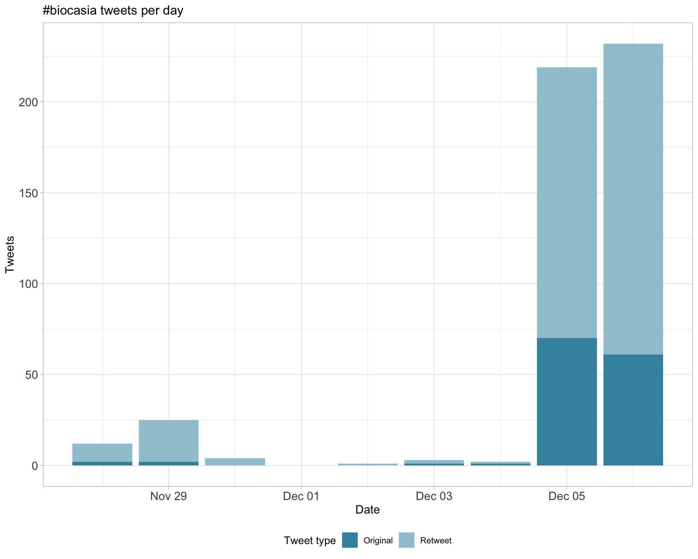
2.2 Tweets by day and time
Filtered for dates 2019-12-05 - 2019-12-06 in the Australia/Sydney timezone.
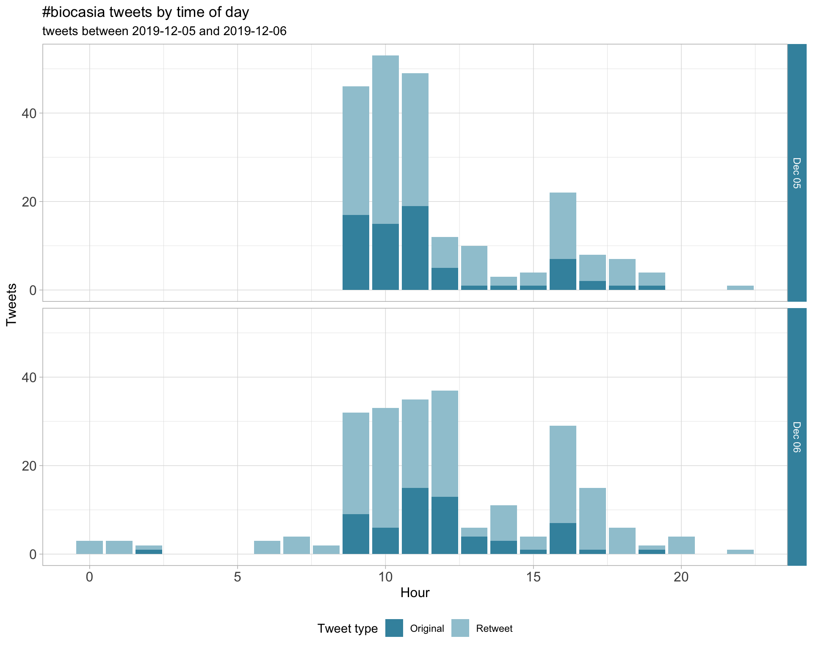
3 Users
3.1 Top tweeters
Overall
Original
Retweets
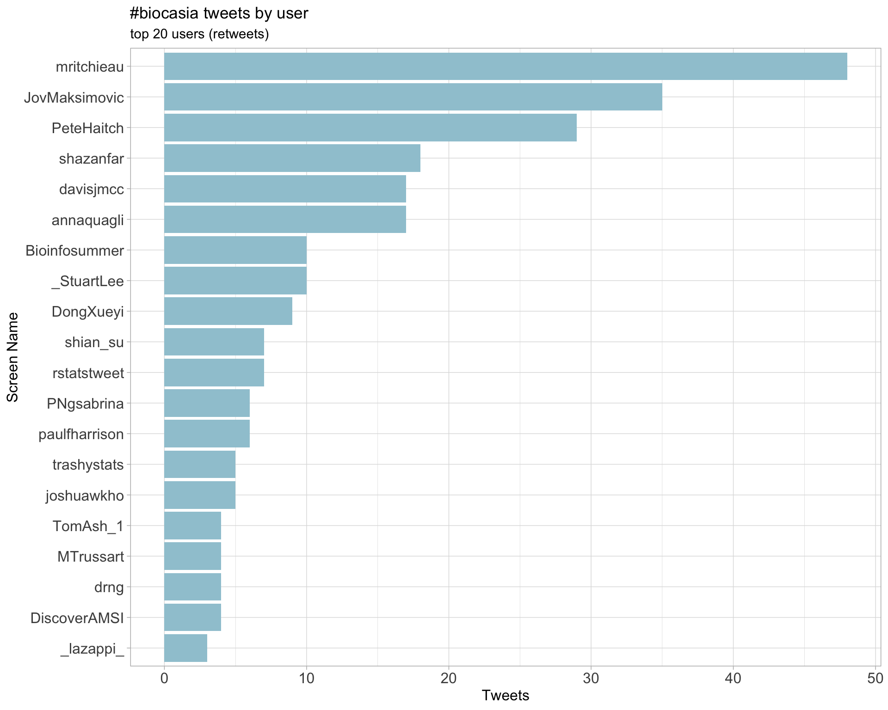
3.2 Retweet proportion
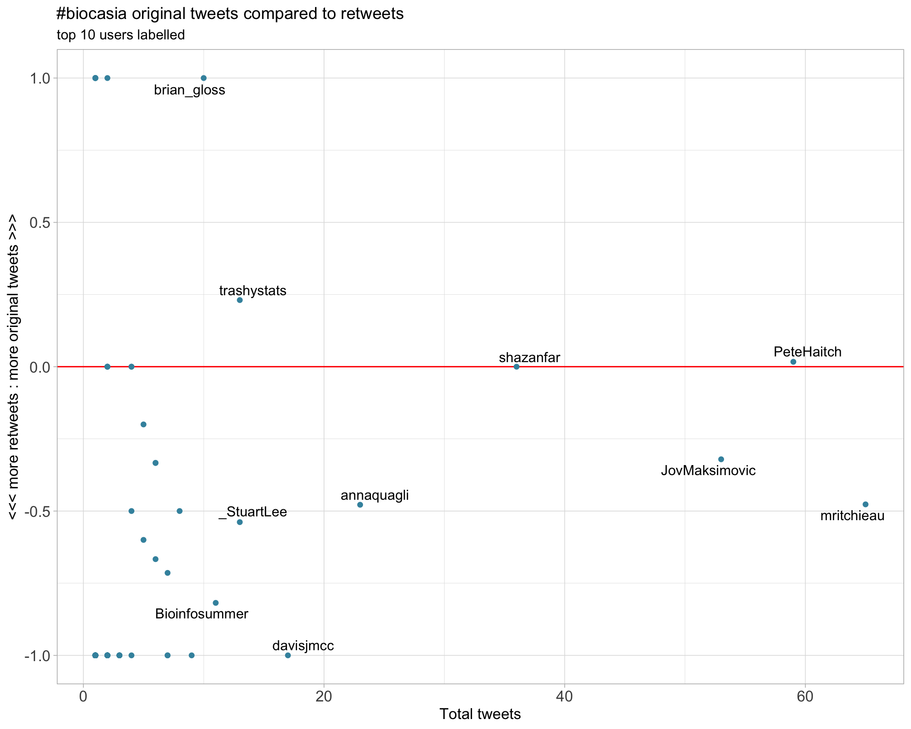
3.3 Top tweeters timeline
3.4 Top tweeters by day
Overall
Day 1
Day 2
Original
Day 1
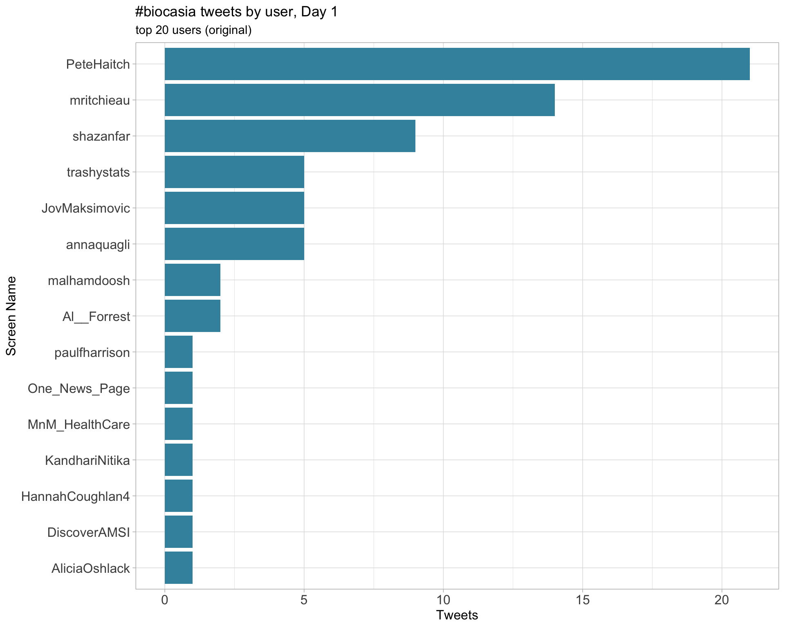
Day 2
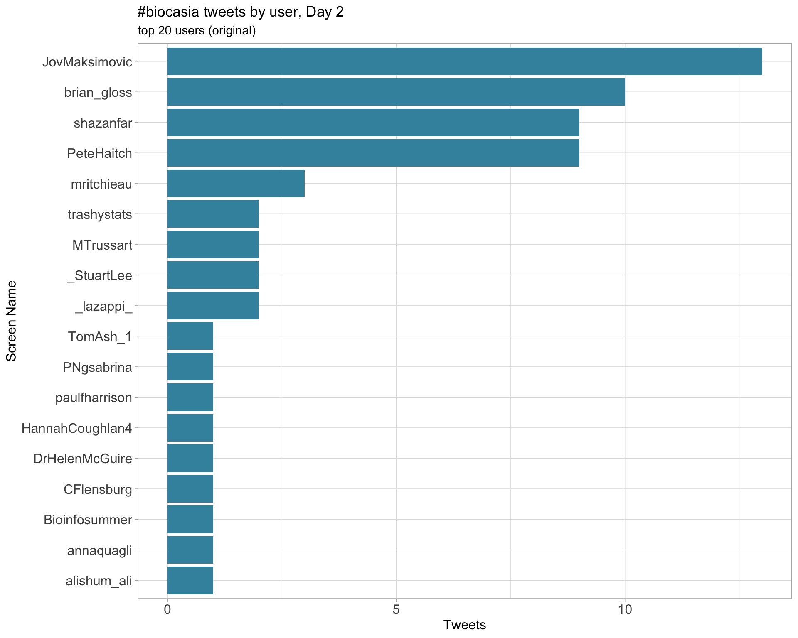
Retweets
Day 1
Day 2
4 Sources
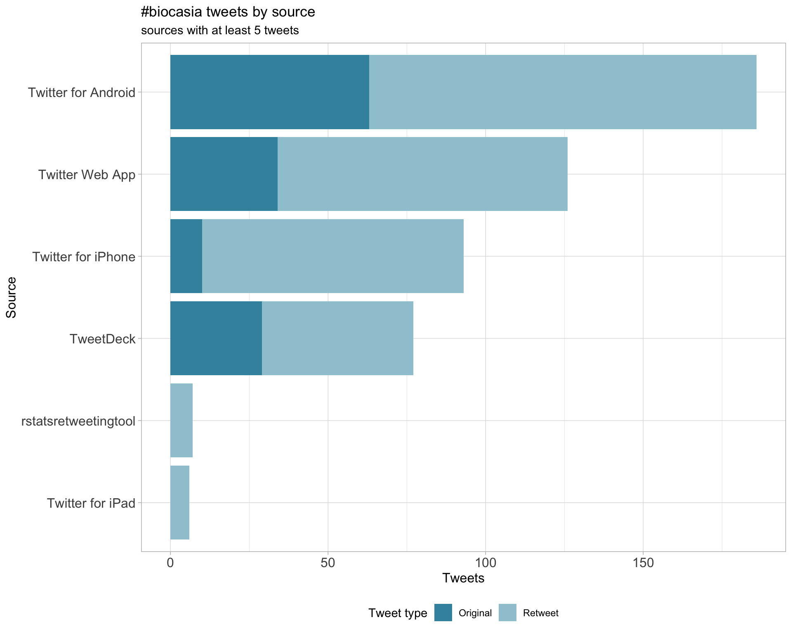
5 Networks
5.1 Replies
The “replies network”, composed from users who reply directly to one another, coloured by PageRank.
5.2 Mentions
The “mentions network”, where users mention other users in their tweets. Filtered for a k-core of 2. Node colour and size adjusted according to PageRank score.
6 Tweet types
6.1 Retweets
Proportion

Count
Top 10
| screen_name | text | retweet_count |
|---|---|---|
| _StuartLee | For #BiocAsia I’ve written a workflow package for exploring and combining results from RNA-seq and ATAC-seq data. First iteration is up here: https://t.co/03oRjSfThQ | 22 |
| trashystats |
For #BiocAsia @PeteHaitch and me are giving a tutorial on how to make a Bioconductor package üì¶ with @rstudio. You can find the tutorial here (feedback very welcome): https://t.co/y9vkKBgYSA |
14 |
| PeteHaitch | G’day from #biocasia https://t.co/f2e2XNNkmG | 11 |
| PeteHaitch | PuXue Qiao sharing the resources she, along with Ruqian Lyu and @davisjmcc, developed for a 2-day scRNA-seq course https://t.co/sq2q2HgEA6 #biocasia | 8 |
| mritchieau | @shazanfar from the @MarioniLab introduces scHOT for flexible analysis of higher-order interactions in #singlecell data: shows us examples of variability, correlation and spatial analysis #biocasia. Code available at https://t.co/p8l2m21jqt https://t.co/41Nbf73QtU | 8 |
| annaquagli | Thanks to @trashystats for the detailed documentation and workshop on making @Bioconductor üì¶ . Did you know that you can go inside the R/myfun.R -> click on ‚ÄòCode‚Äô -> ‚ÄòInsert Roxygen Skeleton‚Äô ?ü§Ø #BiocAsia https://t.co/GDDjQW9Gny https://t.co/urkJfLMP7v | 6 |
| trashystats |
@shazanfar is absolutely filling John’s massive shoes (literally and figuratively) by presenting scHOT which allows investigation of higher order statistics in single cell data #biocasia. https://t.co/FNSAlOjfup |
6 |
| PeteHaitch | Charity Law, developer of voom, introducing an extension to voom to handle group-specific variance estimation and how she’s thinking about adapting it to scRNA-seq differential expression analysis #biocasia https://t.co/HOguf3wWpl | 5 |
| annaquagli | Super interesting discussion by Charity Law from @mritchieau lab about how different levels of variation (BCV in the #edgeR world) infleluence the significance of differential expression analysis‚Ķ PS. I have rarely seen BCV < 0.4/0.5 in my samples üò≠ #biocasia https://t.co/NlXzghbNb7 | 4 |
| shazanfar | #biocasia @paulfharrison presenting Topconfects (pub https://t.co/5mYDprcT27 ) that ranks genes based on confidence bounds on the log-fold changes. Furthering @davisjmcc & Smyth’s TREAT (pub https://t.co/iZeszEIkDU ) Software: https://t.co/5H3KA4lFZs works nicely with limma/edgeR | 4 |
Most retweeted
6.2 Likes
Proportion
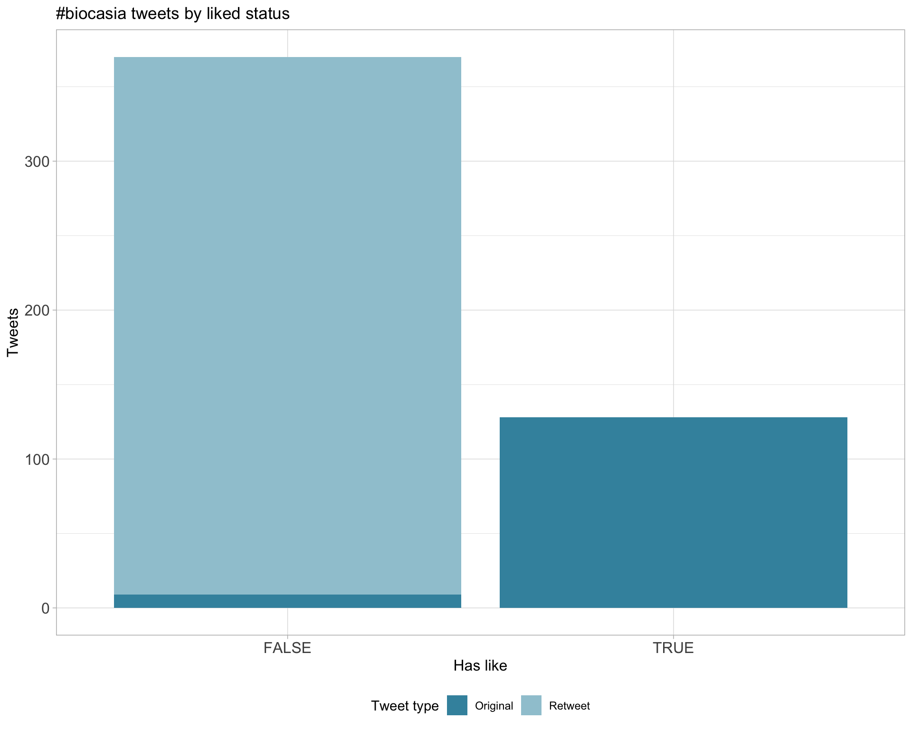
Count
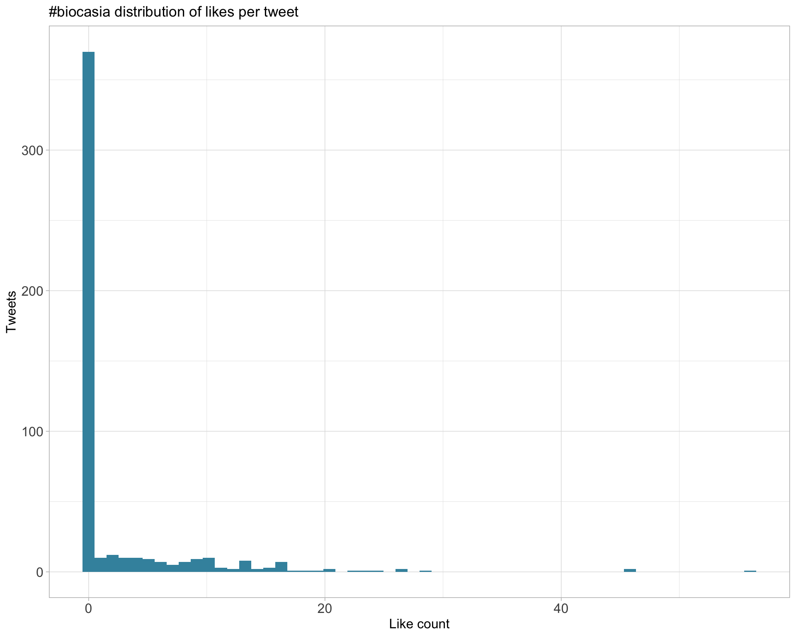
Top 10
| screen_name | text | favorite_count |
|---|---|---|
| _StuartLee | For #BiocAsia I’ve written a workflow package for exploring and combining results from RNA-seq and ATAC-seq data. First iteration is up here: https://t.co/03oRjSfThQ | 56 |
| PeteHaitch | G’day from #biocasia https://t.co/f2e2XNNkmG | 36 |
| trashystats |
For #BiocAsia @PeteHaitch and me are giving a tutorial on how to make a Bioconductor package üì¶ with @rstudio. You can find the tutorial here (feedback very welcome): https://t.co/y9vkKBgYSA |
26 |
| CrowellHL | Off to üá¶üá∫ for some Bioinformatics fun üë©ü誂Äçüíª, to talk & teach about CyTOF at #BiocAsia / BioInfoSummer in Sydney, and explore other parts of AUS. Stressed, grateful and excited! - Now looking forward to 20h of reading & movies ‚úàÔ∏èüò¥ That completes my #BiocBingo ü•≥ | 23 |
| PeteHaitch | Charity Law, developer of voom, introducing an extension to voom to handle group-specific variance estimation and how she’s thinking about adapting it to scRNA-seq differential expression analysis #biocasia https://t.co/HOguf3wWpl | 20 |
| PeteHaitch | Exciting talk by @shazanfar bringing scHOT (https://t.co/1NSzfqWwLe) to spatial transcriptomics, the cool new kid on the single cell block #biocasia https://t.co/4SsGLInsmk | 20 |
| PeteHaitch | You know it’s a @DongXueyi talk when Pokemon make an appearance. Xueyi is presenting her work on RNA-seq analysis of @nanopore data #biocasia https://t.co/PblubdtTSH | 19 |
| PeteHaitch | It takes 5+ bioinformaticians to get the bloody projector working, thanks to @JovMaksimovic for being willing to improvise! Excited to hear her work on gene set testing for differentially methylated regions #biocasia https://t.co/R8OUlu4Hy6 | 17 |
| PeteHaitch | Lots of people in the house to learn about @Bioconductor from the leader of the project, Martin Morgan at #biocasia #BioInfoSummer https://t.co/lwPLmrBJJM | 16 |
| annaquagli | Thanks to @trashystats for the detailed documentation and workshop on making @Bioconductor üì¶ . Did you know that you can go inside the R/myfun.R -> click on ‚ÄòCode‚Äô -> ‚ÄòInsert Roxygen Skeleton‚Äô ?ü§Ø #BiocAsia https://t.co/GDDjQW9Gny https://t.co/urkJfLMP7v | 15 |
Most likes
6.3 Quotes
Proportion
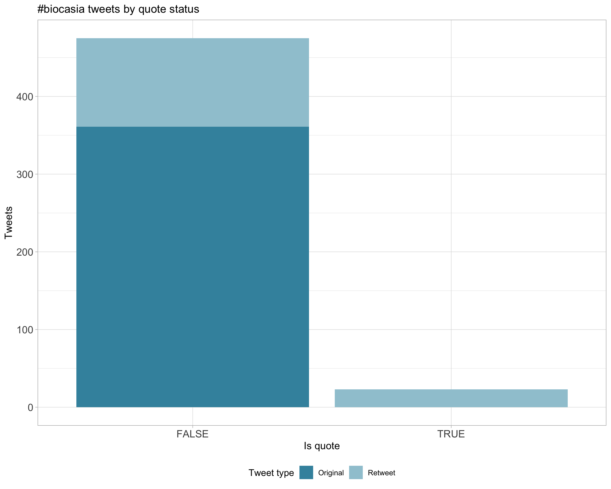
Count
Top 10
| screen_name | text | quote_count |
|---|---|---|
| joshuawkho | Please come join me at the #BioCAsia conference! https://t.co/RVzv1jvCzz | 1 |
| mritchieau | #biocasia https://t.co/q4IjB0zb27 | 1 |
| JovMaksimovic | I really need to get onto the @Bioconductor slack #biocasia https://t.co/GffPVaX5F8 | 1 |
| HannahCoughlan4 | Thanks for the opportunity to present my work! #biocasia https://t.co/g9i3Abkm3E | 1 |
| trashystats | This was a most impressive undergrad talk. Beautiful visualizations! #biocasia https://t.co/DZeUiqexlu | 1 |
| mritchieau | #biocasia https://t.co/DhQnm7H9md | 1 |
| shazanfar |
Added, thanks Andrew!! #BioInfoSummer OR @bioinfosummer OR #biocasia OR #abacbs OR @abacbs OR #GIWABACBS2019 OR #abacbs2019 OR #abacbs19 OR #COMBINE19 OR @combine_au OR #COMBINE2019 https://t.co/GcPXYQY7ML |
1 |
| mritchieau | @joshuakho’s paper on this work is at https://t.co/aBQvNFUCcc Great collaboration with David Humphreys from @VictorChangInst driving methods and software development #biocasia https://t.co/OiRtwPzVtg | 1 |
| mritchieau | Watch the demo of using the Ularcirc #bioconductor package for visualising and analysing circular RNAs at https://t.co/P0ViJ7pi43 #biocasia https://t.co/3olI9ltMST | 1 |
| Al__Forrest |
#BioInfoSummer OR @bioinfosummer OR #biocasia OR #abacbs OR @abacbs OR #GIWABACBS2019 OR #abacbs2019 OR #abacbs19 Thanks @shazanfar for the compendium of tags! https://t.co/Obi3Fq8k22 |
1 |
Most quoted
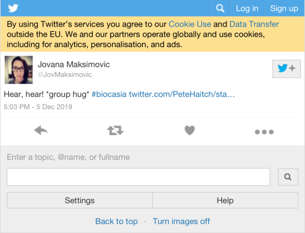
7 Media
Proportion
Top 10
| screen_name | text | favorite_count |
|---|---|---|
| PeteHaitch | G’day from #biocasia https://t.co/f2e2XNNkmG | 36 |
| PeteHaitch | Charity Law, developer of voom, introducing an extension to voom to handle group-specific variance estimation and how she’s thinking about adapting it to scRNA-seq differential expression analysis #biocasia https://t.co/HOguf3wWpl | 20 |
| PeteHaitch | Exciting talk by @shazanfar bringing scHOT (https://t.co/1NSzfqWwLe) to spatial transcriptomics, the cool new kid on the single cell block #biocasia https://t.co/4SsGLInsmk | 20 |
| PeteHaitch | You know it’s a @DongXueyi talk when Pokemon make an appearance. Xueyi is presenting her work on RNA-seq analysis of @nanopore data #biocasia https://t.co/PblubdtTSH | 19 |
| PeteHaitch | It takes 5+ bioinformaticians to get the bloody projector working, thanks to @JovMaksimovic for being willing to improvise! Excited to hear her work on gene set testing for differentially methylated regions #biocasia https://t.co/R8OUlu4Hy6 | 17 |
| PeteHaitch | Lots of people in the house to learn about @Bioconductor from the leader of the project, Martin Morgan at #biocasia #BioInfoSummer https://t.co/lwPLmrBJJM | 16 |
| annaquagli | Thanks to @trashystats for the detailed documentation and workshop on making @Bioconductor üì¶ . Did you know that you can go inside the R/myfun.R -> click on ‚ÄòCode‚Äô -> ‚ÄòInsert Roxygen Skeleton‚Äô ?ü§Ø #BiocAsia https://t.co/GDDjQW9Gny https://t.co/urkJfLMP7v | 15 |
| mritchieau | @shazanfar from the @MarioniLab introduces scHOT for flexible analysis of higher-order interactions in #singlecell data: shows us examples of variability, correlation and spatial analysis #biocasia. Code available at https://t.co/p8l2m21jqt https://t.co/41Nbf73QtU | 15 |
| PeteHaitch | We’ve had scRNA, CyTOF, and now Hi-C with @HannahCoughlan4 telling us about a gene-oriented analysis approach using limma and edgeR, tools originally developed for differential expression analysis. Absolute workhorses of @Bioconductor #biocasia https://t.co/4ZI4qf6rkD | 14 |
| mritchieau | Plans to put the Asia back into #biocasia in 2020 - stay tuned for dates and details! https://t.co/WbaBxXJpin | 14 |
7.1 Most liked image

8 Tweet text
8.1 Word cloud
The top 100 words used 3 or more times.
8.2 Bigram graph
Words that were tweeted next to each other at least 3 times.
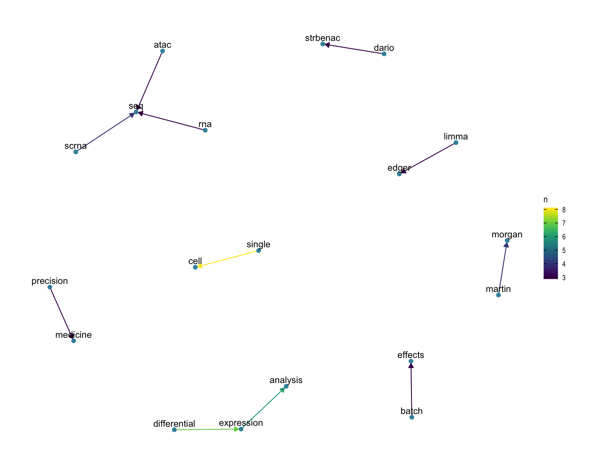
8.3 Topic modelling
Top 10 words associated with 6 topics identified by LDA.

8.3.1 Representative tweets
Most representative tweets for each topic
Topic 1
| screen_name | text | gamma |
|---|---|---|
| shazanfar | #biocasia @paulfharrison presenting Topconfects (pub https://t.co/5mYDprcT27 ) that ranks genes based on confidence bounds on the log-fold changes. Furthering @davisjmcc & Smyth’s TREAT (pub https://t.co/iZeszEIkDU ) Software: https://t.co/5H3KA4lFZs works nicely with limma/edgeR | 0.9963586 |
| shazanfar |
For those interested in keeping up to date with the festival of bioinformatics this & next week in Sydney, here‚Äôs my Tweetdeck search üòÇ #BioInfoSummer OR @bioinfosummer OR #biocasia OR #abacbs OR @abacbs OR #GIWABACBS2019 OR #abacbs2019 OR #abacbs19 did I cover all bases? üòÇ |
0.9953929 |
| _StuartLee | For #BiocAsia I’ve written a workflow package for exploring and combining results from RNA-seq and ATAC-seq data. First iteration is up here: https://t.co/03oRjSfThQ | 0.9950658 |
| shazanfar | #biocasia Joshua Ho @joshuawkho presenting Ularcirc (a back-splice event on Circular :D ), circular RNA analysis package available on @Bioconductor https://t.co/jFxiHNhnOg Tutorial video https://t.co/bnZhk3tNCu | 0.9950658 |
| trashystats |
@shazanfar is absolutely filling John’s massive shoes (literally and figuratively) by presenting scHOT which allows investigation of higher order statistics in single cell data #biocasia. https://t.co/FNSAlOjfup |
0.9950658 |
| shazanfar |
Added, thanks Andrew!! #BioInfoSummer OR @bioinfosummer OR #biocasia OR #abacbs OR @abacbs OR #GIWABACBS2019 OR #abacbs2019 OR #abacbs19 OR #COMBINE19 OR @combine_au OR #COMBINE2019 https://t.co/GcPXYQY7ML |
0.9937302 |
| PeteHaitch | PuXue Qiao sharing the resources she, along with Ruqian Lyu and @davisjmcc, developed for a 2-day scRNA-seq course https://t.co/sq2q2HgEA6 #biocasia | 0.9937302 |
| PeteHaitch | You know it’s a @DongXueyi talk when Pokemon make an appearance. Xueyi is presenting her work on RNA-seq analysis of @nanopore data #biocasia https://t.co/PblubdtTSH | 0.9931084 |
| mritchieau | Watch the demo of using the Ularcirc #bioconductor package for visualising and analysing circular RNAs at https://t.co/P0ViJ7pi43 #biocasia https://t.co/3olI9ltMST | 0.9931084 |
| Al__Forrest |
#BioInfoSummer OR @bioinfosummer OR #biocasia OR #abacbs OR @abacbs OR #GIWABACBS2019 OR #abacbs2019 OR #abacbs19 Thanks @shazanfar for the compendium of tags! https://t.co/Obi3Fq8k22 |
0.9914033 |
Topic 2
| screen_name | text | gamma |
|---|---|---|
| PeteHaitch | @MTrussart telling us the best way to deal with batch effects in CyTOF (or indeed any experiment) is to design the experiment properly! If you plan by expecting batch effects, e.g. including control samples in each batch, then you can adjust for them #biocasia https://t.co/DX40j4O1B8 | 0.9965399 |
| PeteHaitch | We’ve had scRNA, CyTOF, and now Hi-C with @HannahCoughlan4 telling us about a gene-oriented analysis approach using limma and edgeR, tools originally developed for differential expression analysis. Absolute workhorses of @Bioconductor #biocasia https://t.co/4ZI4qf6rkD | 0.9961572 |
| PeteHaitch | @paulfharrison advocating for the use of confidence intervals over p-values when reporting differential expression analysis results #biocasia This idea implemented in topconfects @Bioconductor package: https://t.co/8bKQQk0Bg2 Slides: https://t.co/qJqFLwWzbB https://t.co/O3qL6A7Ov7 | 0.9959323 |
| CrowellHL | Off to üá¶üá∫ for some Bioinformatics fun üë©ü誂Äçüíª, to talk & teach about CyTOF at #BiocAsia / BioInfoSummer in Sydney, and explore other parts of AUS. Stressed, grateful and excited! - Now looking forward to 20h of reading & movies ‚úàÔ∏èüò¥ That completes my #BiocBingo ü•≥ | 0.9959323 |
| PeteHaitch | It takes 5+ bioinformaticians to get the bloody projector working, thanks to @JovMaksimovic for being willing to improvise! Excited to hear her work on gene set testing for differentially methylated regions #biocasia https://t.co/R8OUlu4Hy6 | 0.9950658 |
| JovMaksimovic | #biocasia has gotten off to a great start with some very interesting talks already! Now we have @paulfharrison telling us about using confidence intervals when reporting differential expression results: https://t.co/uVGDKnC2SH. | 0.9931084 |
| shazanfar | Super excited to be here in Sydney for #biocasia ! Kicking off the meeting with an introduction to Bioconductor from @mt_morgan https://t.co/aIHJcWqBFB | 0.9914033 |
| PeteHaitch | @JovMaksimovic develops the missMethyl package which has the best logo in the business #biocasia https://t.co/JFMQdiJUoa https://t.co/D5uXSQNtJB | 0.9901897 |
| trashystats | 5 minute whirlwind tour of HiC analysis in Biocondutor by @HannahCoughlan4 at #biocasia. https://t.co/CSjMJIclsT | 0.9901897 |
| PeteHaitch | @HannahCoughlan4 asks, can we use limma and edgeR for differential Hi-C analysis. Answer below #biocasia https://t.co/eTXHOW4nYJ | 0.9885771 |
| KandhariNitika | Learning Short read sequencing with pokemons #biocasia #Bioinfosummer https://t.co/B03uOmfl4Y | 0.9885771 |
| paulfharrison | The weather in Sydney is “smoky”. #BiocAsia #biocalypse #thisisfine https://t.co/HkQ9ZkHO5B | 0.9885771 |
Topic 3
| screen_name | text | gamma |
|---|---|---|
| shazanfar |
PuXue Xiao with her newly minted PhD (congrats!!), postdoc with @davisjmcc presenting a great talk on the important problem of nearest-neighbour graph construction prior to single cell clustering #biocasia PuXue will be presenting a single cell workshop later today! https://t.co/7YOssXZpGN |
0.9967040 |
| mritchieau | @paulfharrison introduces us to the ‘False Coverage-statement Rate’ concept which seems like a neat idea. Works with limma, edgeR, DESeq2 differential expression analysis pipelines and can be used in #geneset testing. Slides on topconfects at https://t.co/wbAOqjtCw2 #biocasia https://t.co/tHtpyYPWg9 | 0.9967040 |
| PeteHaitch | Charity Law, developer of voom, introducing an extension to voom to handle group-specific variance estimation and how she’s thinking about adapting it to scRNA-seq differential expression analysis #biocasia https://t.co/HOguf3wWpl | 0.9963586 |
| annaquagli | @MTrussart discussing all of #Cytof at #biocasia. Chat to her to know more about her debarcoding method using Gaussian mixtures, #reproducibility and removing batch effect with the #ruv #rstats üì¶, #normalization and cell #clustering! https://t.co/Ysr9InoDhs https://t.co/2Beaa8jXqU | 0.9961572 |
| mritchieau | @MTrussart introduces us to CyTOF analysis, how to preprocess these data, a novel barcoding strategy to increase cell number and the use of RUV for removing batch effects #biocasia https://t.co/v1tiB4bSlB | 0.9950658 |
| PeteHaitch | Exciting talk by @shazanfar bringing scHOT (https://t.co/1NSzfqWwLe) to spatial transcriptomics, the cool new kid on the single cell block #biocasia https://t.co/4SsGLInsmk | 0.9946887 |
| annaquagli | @PeteHaitch and Martin Morgan opening #biocasia in Sydney and giving the big news about next year conference being in Beijing! Back to Asia.. and where loads of @Bioconductor users/dev clearly are! https://t.co/gm59TIHI4L | 0.9942491 |
| mritchieau | @joshuakho’s paper on this work is at https://t.co/aBQvNFUCcc Great collaboration with David Humphreys from @VictorChangInst driving methods and software development #biocasia https://t.co/OiRtwPzVtg | 0.9942491 |
| PeteHaitch | @haoyyang bringing us home on Day 1 with an overview of software for single-cell ATAC-seq #biocasia https://t.co/RyAq7Zhyhz | 0.9931084 |
| PeteHaitch | Lots of people in the house to learn about @Bioconductor from the leader of the project, Martin Morgan at #biocasia #BioInfoSummer https://t.co/lwPLmrBJJM | 0.9923497 |
Topic 4
| screen_name | text | gamma |
|---|---|---|
| carroll_jono | I’ll be in Sydney for #BioCAsia as of tomorrow afternoon - any #rstats peeps willing to brave the smoke for dinner and/or drinks around Circular Quay? I’ve never been to Sydney so I’ll be checking out the gardens, Opera House, and the bridge like a proper tourist. https://t.co/QR8VD62gg4 | 0.9965399 |
| mritchieau | @mt_morgan encourages us to participate in #bioconductor #slack. Has been a great vehicle for community participation & collaboration. Highlights include development of iSEE & the #singlecell analysis cookbook https://t.co/CLrXYW2kmB. Sign up at https://t.co/Qa7OwOPQdG #biocasia https://t.co/tRJlxAPWYY | 0.9963586 |
| shazanfar | Hannah Coughlan @HannahCoughlan4 giving an excellent #biocasia talk on obtaining gene specific resolution for differential testing of Hi-C data. Code: https://t.co/qUBV648yNX | 0.9950658 |
| trashystats | Our second invited speaker @joshuawkho is telling us about easy detection of circular rna with a cool #rstats shiny tool. #biocasia https://t.co/8LknwZkVMC | 0.9942491 |
| One_News_Page | Afghans demand justice amid attempt to probe war crimes at ICC: https://t.co/atyUQAyww8 #biocasia | 0.9931084 |
| PeteHaitch | @mt_morgan emphasising the benifits of playing well with others, bringing the powers of #rstats and #python together within @Bioconductor #biocasia https://t.co/VAM3BkDsRT | 0.9923497 |
| mritchieau | @steman_research introduces tidy tools for transcriptomics analysis. Available on GitHub now https://t.co/U3IQ7IuhJ3 #bioconductor later! #biocasia https://t.co/gxKMgFduGt | 0.9923497 |
| trashystats | This was a most impressive undergrad talk. Beautiful visualizations! #biocasia https://t.co/DZeUiqexlu | 0.9885771 |
| trashystats | Very relieved that we have got kick-off at #biocasia! | 0.9666456 |
| JovMaksimovic | I really need to get onto the @Bioconductor slack #biocasia https://t.co/GffPVaX5F8 | 0.9666456 |
Topic 5
| screen_name | text | gamma |
|---|---|---|
| annaquagli | Super interesting discussion by Charity Law from @mritchieau lab about how different levels of variation (BCV in the #edgeR world) infleluence the significance of differential expression analysis‚Ķ PS. I have rarely seen BCV < 0.4/0.5 in my samples üò≠ #biocasia https://t.co/NlXzghbNb7 | 0.9969896 |
| MnM_HealthCare |
Pharmacy Automation Market: Global Key Players, Trends, Industry Size #Pharmacy #Automation #Market #robot #healthcare #medical #devices #health #healthy #BiocAsia https://t.co/fcBZ9eptTf |
0.9963586 |
| malhamdoosh | Professor Pei Wang from @IcahnMountSinai at #biocasia 2019 explaining her DreamAI method at her workshop on methods and tools for preprocessing and imputation of mass spectrometry-based proteomics data https://t.co/2jZbPIIwaj | 0.9961572 |
| mritchieau | @DongXueyi tells us how to analyse #longread @nanopore #RNAseq data using #bioconductor. Schmd1 data (both long and short reads) from @BlewittMarnie lab. New tools still needed for accurate isoform analysis #biocasia https://t.co/rjrExr6jv6 | 0.9959323 |
| mritchieau | @shazanfar from the @MarioniLab introduces scHOT for flexible analysis of higher-order interactions in #singlecell data: shows us examples of variability, correlation and spatial analysis #biocasia. Code available at https://t.co/p8l2m21jqt https://t.co/41Nbf73QtU | 0.9956794 |
| PeteHaitch | @rafalab presenting his work estimating death rates following Hurricane Maria in Puerto Rico. Here’s the blog post showing how much of the work was in cleaning the data https://t.co/gi8ixEkSZQ #biocasia #BioInfoSummer | 0.9946887 |
| annaquagli | The #biocasia pub gathering is happening right now! Come join us for a üç∫üçªü•Çüçæ at the Forest Lodge! Leaving soon from the Charles Perkins centre. https://t.co/rr77oHv4nh | 0.9937302 |
| mritchieau | @HannahCoughlan4 from @WEHI_research shows us how to analyse Hi-C data in #bioconductor #YesWeCan #biocasia https://t.co/HoGboOAeRf | 0.9829822 |
| HannahCoughlan4 | Thanks for the opportunity to present my work! #biocasia https://t.co/g9i3Abkm3E | 0.9666456 |
| mritchieau | #biocasia https://t.co/DhQnm7H9md | 0.9358584 |
Topic 6
| screen_name | text | gamma |
|---|---|---|
| PeteHaitch | @Bioconductor invests time and effort into developing reusable data structures that are specifically designed for bioinformatics datasets, like SummarizedExperiment. Using these saves you developing your own and improves interoperability between packages #biocasia https://t.co/WCnMuTI0RK | 0.9961572 |
| Al__Forrest | Enjoying #biocasia We have a great lineup of speakers in human genomics at #HGM2020 in Perth April 5-8 https://t.co/S4dGO1LRpe Earlybird closes Dec 16th. Over 40 speakers to be selected from the submitted abstracts!! | 0.9959323 |
| PeteHaitch | Closing out the first session of #biocasia, we’ve got our first presentation from an undergrad! Kathleen Zeglinski telling us about gmoviz, a package she is developing at @CSL to visualise genome-editing data https://t.co/GsixCMALXD | 0.9956794 |
| annaquagli | Thanks to @trashystats for the detailed documentation and workshop on making @Bioconductor üì¶ . Did you know that you can go inside the R/myfun.R -> click on ‚ÄòCode‚Äô -> ‚ÄòInsert Roxygen Skeleton‚Äô ?ü§Ø #BiocAsia https://t.co/GDDjQW9Gny https://t.co/urkJfLMP7v | 0.9950658 |
| DiscoverAMSI | The first of the AMSI #BioInfoSummer 2019 joint sessions with #biocasia will start at 1.30pm with 3 workshops to choose from sponsored by @CMRI_AUS on our mass spec analytics day | 0.9946887 |
| PeteHaitch | @mt_morgan telling us we can use BiocManager not just to install and check validity of @Bioconductor installation but to find those sometimes hard-to-remember package names #biocasia https://t.co/hDvXgzZpAI | 0.9942491 |
| JovMaksimovic | Using formal data structures and data import functions in @Bioconductor can help you avoid common pitfalls such as dealing with 0 vs. 1 based coordinates #biocasia | 0.9942491 |
| mritchieau | @mt_morgan highlights support in #bioconductor for AnVIL #CloudComputing to save us from having to download huge data sets #biocasia https://t.co/pO1TNVmEx4 | 0.9937302 |
| mritchieau | Thanks to the organisers of #biocasia @PeteHaitch @trashystats Stephen Pederson, Dario Strbenac and the generous sponsors @DiscoverAMSI @CSL @Rstudio @Bioconductor https://t.co/87sMziPP3X | 0.9931084 |
| shazanfar | Thank you to the ineffable @trashystats and fantastic @PeteHaitch for providing the Building a Bioconductor package workshop at #biocasia today! Workshop notes: https://t.co/CaVqvqtw13 | 0.9923497 |
9 Software
Software mentioned in Tweets with links to GitHub, BitBucket, Bioconductor or CRAN.
| Name | Type | Link |
|---|---|---|
| scHOT2019 | GitHub | https://github.com/marionilab/schot2019 |
| topconfects | Bioconductor | https://bioconductor.org/packages/topconfects |
| ttBulk | GitHub | https://github.com/stemangiola/ttbulk |
| Ularcirc | Bioconductor | https://bioconductor.org/packages/Ularcirc |
Session info
## R version 3.6.1 (2019-07-05)
## Platform: x86_64-apple-darwin15.6.0 (64-bit)
## Running under: macOS Mojave 10.14
##
## Matrix products: default
## BLAS: /Library/Frameworks/R.framework/Versions/3.6/Resources/lib/libRblas.0.dylib
## LAPACK: /Library/Frameworks/R.framework/Versions/3.6/Resources/lib/libRlapack.dylib
##
## locale:
## [1] en_US.UTF-8/en_US.UTF-8/en_US.UTF-8/C/en_US.UTF-8/en_US.UTF-8
##
## attached base packages:
## [1] stats graphics grDevices utils datasets methods base
##
## other attached packages:
## [1] fs_1.3.1 here_0.1 knitr_1.26 magick_2.2
## [5] webshot_0.5.2 viridis_0.5.1 viridisLite_0.3.0 wordcloud_2.6
## [9] RColorBrewer_1.1-2 ggraph_2.0.0 ggrepel_0.8.1 ggplot2_3.2.1
## [13] topicmodels_0.2-9 tidytext_0.2.2 igraph_1.2.4.2 stringr_1.4.0
## [17] purrr_0.3.3 forcats_0.4.0 lubridate_1.7.4 tidyr_1.0.0
## [21] dplyr_0.8.3 rtweet_0.6.9
##
## loaded via a namespace (and not attached):
## [1] progress_1.2.2 httr_1.4.1 rprojroot_1.3-2 SnowballC_0.6.0
## [5] tools_3.6.1 backports_1.1.5 utf8_1.1.4 R6_2.4.1
## [9] lazyeval_0.2.2 colorspace_1.4-1 withr_2.1.2 tidyselect_0.2.5
## [13] gridExtra_2.3 prettyunits_1.0.2 processx_3.4.1 curl_4.3
## [17] compiler_3.6.1 cli_1.1.0 xml2_1.2.2 NLP_0.2-0
## [21] labeling_0.3 slam_0.1-46 scales_1.1.0 tm_0.7-6
## [25] callr_3.3.2 askpass_1.1 digest_0.6.23 rmarkdown_1.18
## [29] pkgconfig_2.0.3 htmltools_0.4.0 highr_0.8 rlang_0.4.2
## [33] farver_2.0.1 generics_0.0.2 jsonlite_1.6 tokenizers_0.2.1
## [37] magrittr_1.5 modeltools_0.2-22 Matrix_1.2-17 Rcpp_1.0.3
## [41] munsell_0.5.0 fansi_0.4.0 lifecycle_0.1.0 stringi_1.4.3
## [45] yaml_2.2.0 MASS_7.3-51.4 plyr_1.8.4 grid_3.6.1
## [49] parallel_3.6.1 crayon_1.3.4 lattice_0.20-38 graphlayouts_0.5.0
## [53] hms_0.5.2 zeallot_0.1.0 ps_1.3.0 pillar_1.4.2
## [57] reshape2_1.4.3 stats4_3.6.1 glue_1.3.1 evaluate_0.14
## [61] vctrs_0.2.0 png_0.1-7 tweenr_1.0.1 gtable_0.3.0
## [65] openssl_1.4.1 polyclip_1.10-0 assertthat_0.2.1 xfun_0.11
## [69] ggforce_0.3.1 tidygraph_1.1.2 janeaustenr_0.1.5 tibble_2.1.3
## [73] ellipsis_0.3.0